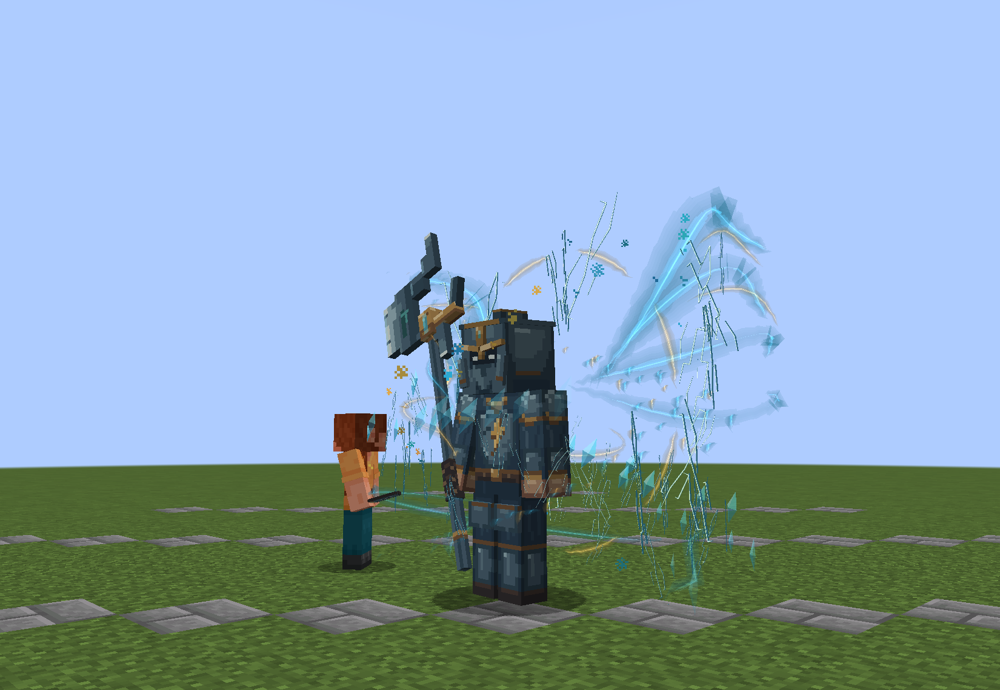
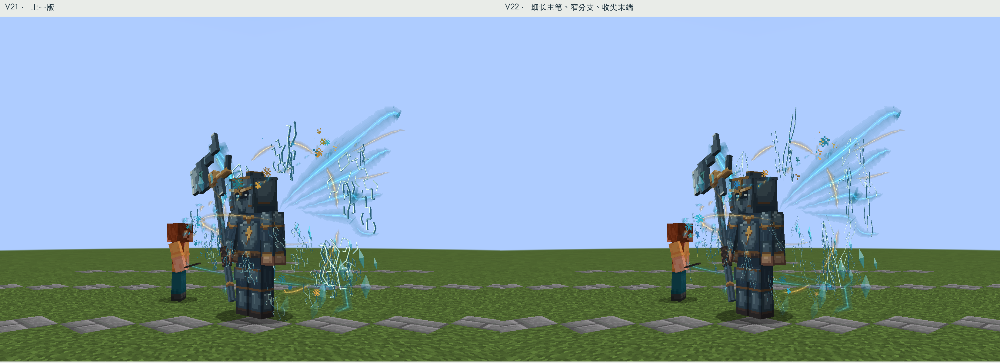
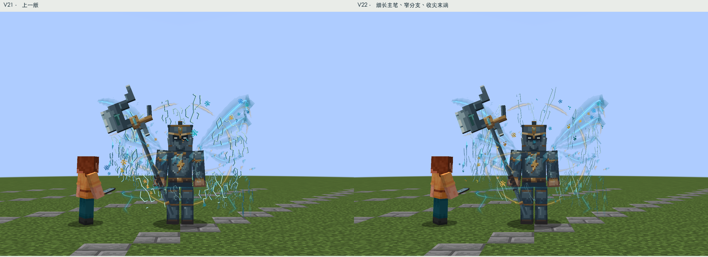
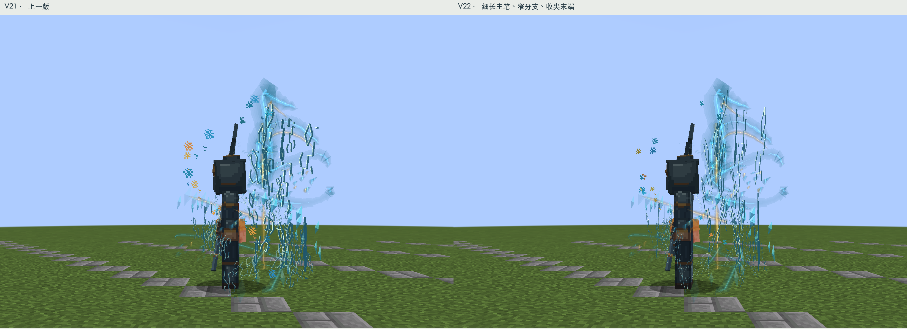
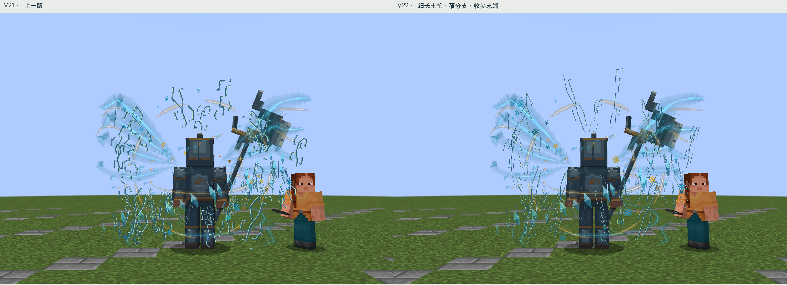
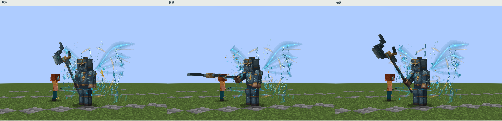
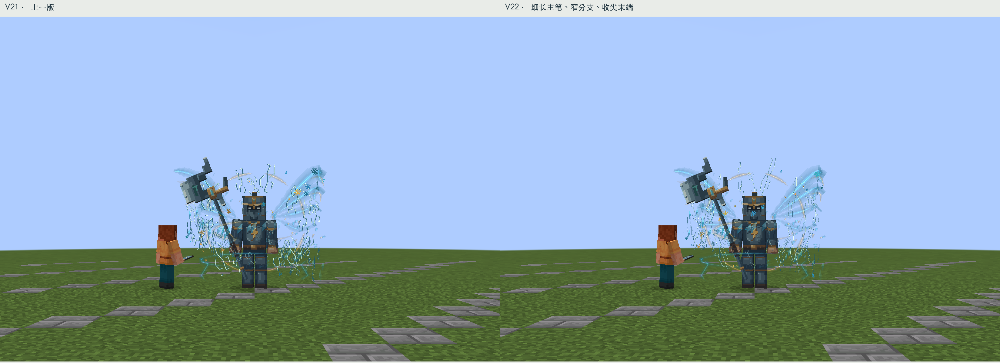
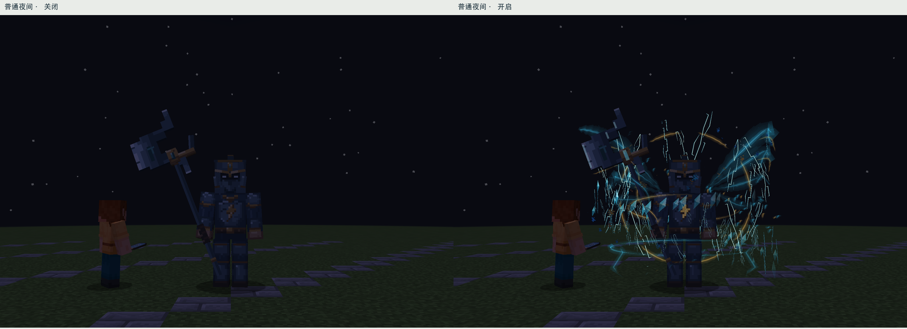
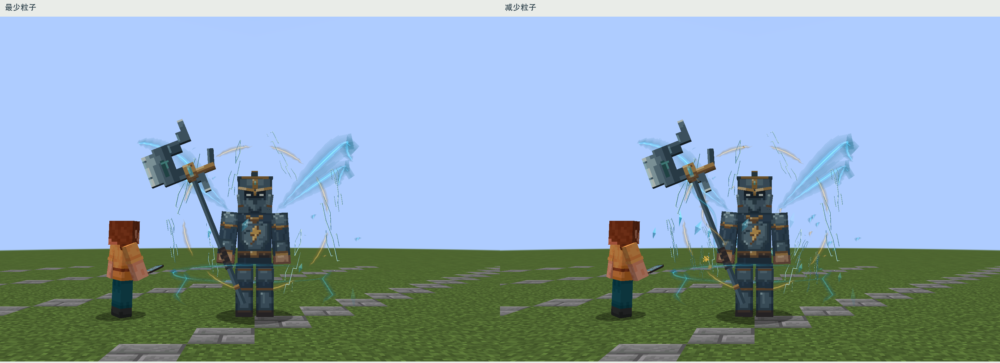

天将 · 纵向剑纹式符文 V22
在V21上继续调整：主笔拉长约48%，横向收窄约44%，笔画再细约44%，侧面厚度减半，断笔末端收尖。保留18枚主符印与48枚碎符的错落密度，不再通过堆数量掩盖宽短问题。身体、头部、武器与动作均不改。

24帧无声实机采样，4.8秒循环。
左V21、右V22；同8米、同FOV70、同光照与裁切。
正面同机位对照
侧面同机位对照
背面同机位对照
原有攻击：蓄势、接触、恢复
12米同机位对比：细笔画远处会减弱，保留整体气场轮廓。
普通夜间，无后期提亮
粒子数量设置的简化表现实际查看的剑斗罗参考
查看了2022年动画评论文章中的截图，不是官方制作分解，也不是手游或漫画。七杀剑近景显示沿长轴延伸的纹路和收尖轮廓；“剑道尘心”静帧可见巨剑周围细长的纵向符号列，前后疏密不同。
借鉴纵向、细线、断笔与疏密关系，未复制字形或图片。静帧分辨率不足以逐字辨认符号，也没有据此推断动画速度。本版仍保留天将原有配色和原创四组符形。
七杀剑近景 · 剑道尘心符号列静帧
构建通过（跳过通用测试）；19个受控实机状态通过。已核对运行资源与模型、贴图、动画哈希。自然战斗、多人性能和第三方光影仍待验证。仅改天将，其他Boss等待验收。
验证记录 · 实机记录 · 沿用的参考记录